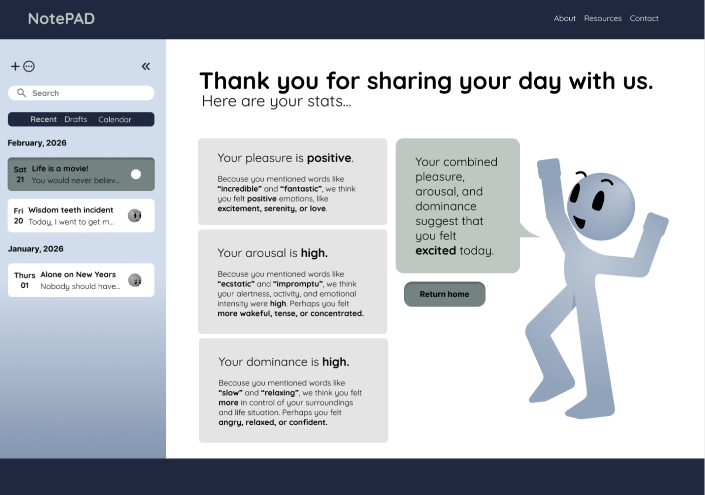

Presented at the 43rd HCIL Symposium New
Diego and Isabella shared their work-in-progress, Data Characters, at the symposium.
Welcome to the Lived Data Collective!
We’re a research group at the University of Maryland, College Park, headed by Dr. Keke Wu. Our goal is to bridge abstract data and lived experience through visualization. Our mission is to make data understandable to every mind, relatable to everyday people, and relevant to everyday life. We believe that when data is connected to human experience, it can foster understanding, reflection, and action.
News & Updates

Diego and Isabella shared their work-in-progress, Data Characters, at the symposium.
Keke taught her first INST 462: Introduction to Data Visualization to 85 undergrads.